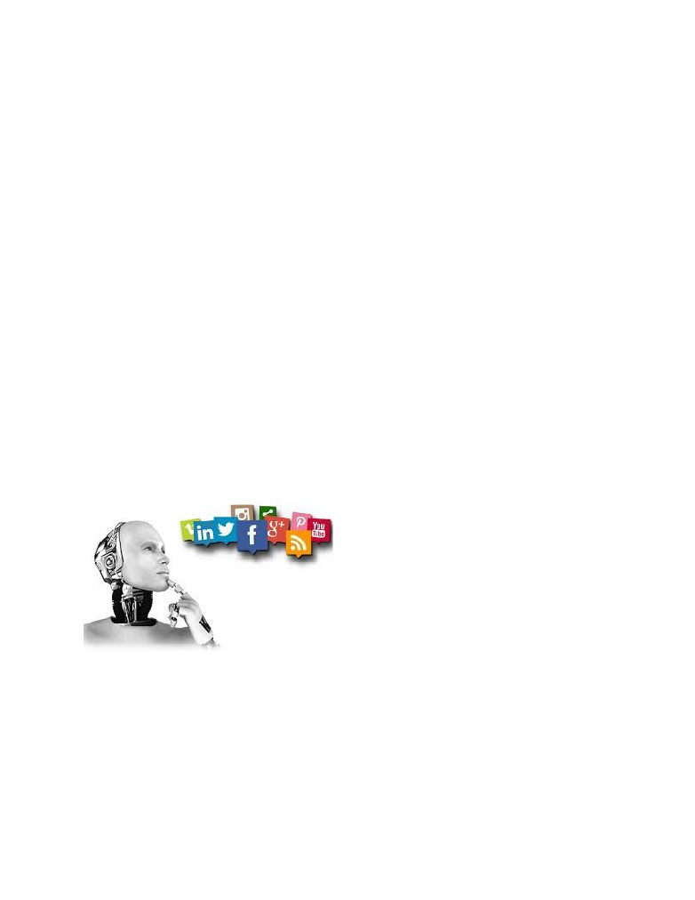
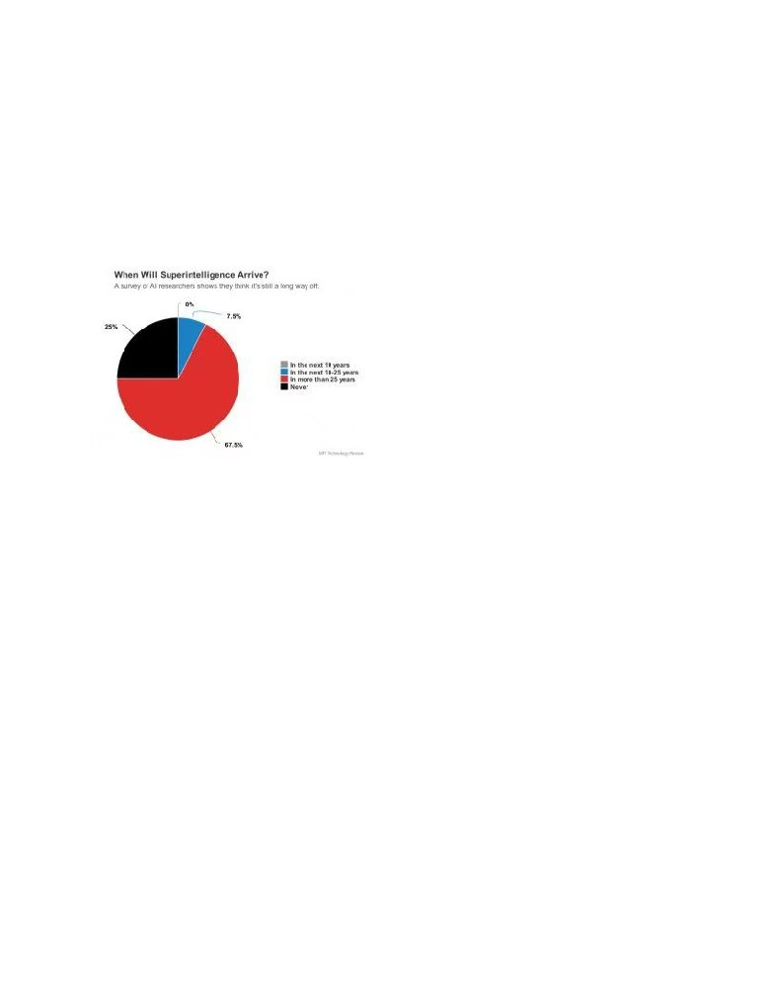

Artificial Intelligence and Regulation:
Crafting a Compromise to Preserve Innovation and Human Dignity
Josh Natis
Welcome to the 21st Century: an age of rapid technological advancement and political
correctness, both of which are more powerful than ever. Rhetoric regarding both is pervasive,
and big corporations are scary, leading the average person to fear and in turn condemn the
unfamiliar realm that is the technological industry. The hotly contested topic of artificial
intelligence is likely to elicit wariness, which translates into governmental regulations being put
in place. On top of that, the current very rigid political climate (fueled by political correctness)
leaves little room for interpretation-- often pigeonholing companies into sacrificing innovation
and inventiveness for making sure they’ve checked all the necessary boxes and won’t be sued. I
was too under the impression that ethical interests need be at the forefront of innovation, prior to
understanding that excessive regulation ensuing from this prioritization may prove harmful to the
development of new technologies. This feeling was only intensified after reading an article about
Google Duplex (Google’s AI calling assistant), which mimicked human colloquialisms and
speech patterns to cast the impression of being human onto unsuspecting callers.
Viewing this as an ethical
breach, it is easy and popular to
assume that the interests of
people are ignored in instances
like these, and thus, people are
led to believe that ethics
manifested as regulations should
preside over technological
development. However, this argument is a simplification of complex issues under the facade of
good intentions. Considering the restrictive nature of regulation and governmental interference, it
is crucial to be able to question such practices in that blindly enforcing ethics may restrict the
production of knowledge in an abstract sense, and, consequently, the production of new
technology. A question arises -- to what extent should we base our decisions on a temporary
(more on that later) ethical code, and in what manner should we enforce the ethics which we
do believe should limit AI? There is much at stake, and the future of knowledge as we know it
lies in the answer to this question. In order to create proper solutions regarding the complex
matter at hand, it is necessary to make reasonable decisions -- something that, in this case, is only
possible once you have a rich understanding of the history of human beings, technology, ethics,
and their interrelatedness.

The media as an institution has a profound effect on the attitudes, conceptions and
preferences of a society. Perhaps this is where the fear of AI (artificial intelligence) originates, as
decades of films about self-actualized robots taking over the world have managed to infiltrate the
minds of many people and make them paranoid. “Writers and directors have been pitting man
against machine on the silver screen for decades”, writes journalist David Shultz in Science
Magazine, where he goes on to rate the popular AI movies Chappie and A.I. a 1 out of 10 and 3
out of 10 (respectively) on the scale of plausibility. But, what exactly is AI? As defined by its
pioneers Minsky and McCarthy, artificial intelligence encompasses “any task performed by a
program or a machine that, if a human carried out the same activity, we would say the human
had to apply intelligence to accomplish the task.” (Heath). In simpler terms, AI is defined as any
device or software that can learn, reason, or act on its own. Of all new technologies which may
be leading us into a new age, AI just may be the most promising. We’re currently experiencing
“deep learning’s Cambrian explosion”, as new algorithms are springing up left and right. (Chen).
These algorithms are insanely powerful, as they
have the ability to teach themselves using large
amounts of data (machine learning), and thus can
create things that humans themselves are unable
to create. AI has already weaved itself into all
aspects of our society-- everyday tools such as Siri, Google Translate, Netflix, Alexa, utilize AI
technology (or less trivially, AI has been shown to outperform humans in some surgical
procedures). This is, however, only the beginning. These applications are all examples of
“Narrow Artificial Intelligence”, whereas the tuly powerful alternative known as “General
Artificial Intelligence” (which refers to AI that has “the type of adaptable intellect found in
humans, a flexible form of intelligence capable of learning how to carry out vastly different
tasks”) is barely even on the horizon (Heath).
Unfortunately, when it comes to AI the age-old saying of “with great power comes great
responsibility” applies to a very great extent. While intended to be used for beneficial
applications, AI also has an infinite potential to be misused (both purposely and by accident) to
do all sorts of bad things ranging from perpetuating racism (Speer) to ending the universe as we
know it (Yudkowsky). The result is an extremely difficult atmosphere to navigate around, as the
looming logizomechanophobia (fear of computers) coupled with the previously mentioned lack
of tolerance for controversiality in ethics and so called “gray areas” creates an environment not
conducive to technological progression. This sparks an intense debate between
knowledge-seekers and politicians, both of which are in pursuit of their own and others’ “best
interests”. In the discussion of ethics and technology as alleged adversaries, it would be
important to provide definitions of both, for the purpose of further argumentation.
Firstly, what are ethics? The term ‘ethics’ is often used interchangeably with ‘morals’,
and although the two are indeed closely related, they are not to be confused. Morality refers to
“one’s own principles regarding right and wrong”, while ethics refer to an external set of rules
and/or laws which are essentially a universal, codified collection of morals, typically held by
members of a society. (Perez). Tying these concepts in with technology (which is “the practical
application of knowledge” according Merriam-Webster’s dictionary, history has made it
strikingly clear that technology is a catalyst for change -- it expands our perspective and
understanding of life, which results in changes to our ethical code. Examples ranging from the
advent of the printing press to the development of Google technologies all adhere to the same
basic premise: new things are discovered or created, sometimes through unorthodox means,
and the consequences are massive. Technology has a vital role in the advancement of the
human race -- every little thing we create changes the lens from which we view the world. Old
problems are swept under the rug as new ones fall from the sky and replace them. All the while,
humans and their perception of right and wrong flows with the wind, while our ethical code is
carried away in tandem by the roaring waves of technology.
This brings us to the first reason against the tight regulation of AI -- the threat of
ideological enslavement. Unfortunately, the possibility of our every action-- and even thought--
being controlled by the government is not as unrealistic as it would seem. To explain this
potential threat, we’ll have to consider ethics and laws, as well as the parties responsible for
changing them. Consider this question: since ethics are based upon many individuals’ decisions
about what is right and what is wrong, what happens if said individuals begin to interpret things
differently? We’ve already demonstrated the likelihood of this occurring by means of
technological advancement, so the question is a practical one. The logical answer would be that
this (hypothetical) society’s ethical code would automatically change as well, since it is entirely
related to the morals held by individuals. Laws, however, do not naturally evolve over time --
one must amend them or create new ones in order to maintain a proper order in society and keep
pace with ever-changing ethics. This is both difficult to achieve and rarely executed, as
throughout history, societies had to liberate themselves from manhandling governments or ruling
classes through rebellion/war in order to codify changes in morality. This is made evident
through the actions of suffragist, anti-slavery and pro-choice social movements who’ve aimed to
rewrite moral codes and amend laws accordingly. Applying this to the ethics surrounding
technological progress, we’ve established that: (1) technology changes perspectives and
broadens knowledge, thus it has the potential to liberate, and (2) that ethics change over time, but
laws do not (they are only changed manually). It is also common knowledge that the government
is responsible for creating laws and regulations (such as those affecting technology), as well as
updating previous laws that have been passed. Lastly, it has been accepted amongst various
established scholars such as professor Tim Wu at Columbia University and professor Robert
Stanley at Hunter College that the American government can, has, and will use mass
manipulation techniques (in the form of propaganda or public relations) to use the American
population for their benefit (Wu 108). Considering this information together, it becomes clear
that it is quite possible for the government to tightly regulate technology, especially
something as powerful as AI, for nefarious purposes yet under the guise of public safety.
For this reason, it is extremely dangerous to keep technology solely within the realm of our
current laws and ethics. Behind closed doors, the government is creating all sorts of technologies
which are deemed illegal and unethical for everyday citizens. A popular example is PRISM, an
NSA program leaked by Edward Snowden that “accessed and collected data through back doors
into US internet companies such as Google and Facebook” (Lee). Chances are, if you’ve used
any services such as Microsoft, Apple, YouTube, or Facebook (the list goes on), it’s more than
likely that your data has been accessed without your knowledge and consent. If we plan to
maintain our dignity and integrity as humans, we should hold the government to the same
standards that it enforces upon us-- otherwise we risk sacrificing our natural rights.

“If you ask any expert as of today what should be regulated in AI the answer would have
to be, inevitably, ‘we don’t know.’” (Amatriain). The field of AI is still in its infancy, and
creating thorough regulations at this point would be futile. The fear of sentient AI, which is the
driving factor of many who are proponents of intense regulation, is agreed to be many years
away from even being a possibility. An anonymous survey created by Oren Etzioni (CEO of the
Allen Institute for Artificial Intelligence and
Professor of Computer Science at the University
of Washington) queried 193 fellows from the
AAAI about their thoughts on “[w]hen we will
achieve Superintelligence” (also known as
Artificial General Intelligence, mentioned
earlier), and 67.5% responded with “in 25 years or more”, while another 25% responded with
“never”. Attempting to create a myriad of regulations for AI right now would cause more harm
than good… with emphasis on harm. As mentioned previously, AI has already become an
integral part of our society, as well as in many others around the world. Due to this, attempting to
strictly regulate AI would be both extremely difficult and damaging to the economy and society.
“AI work is carried out in many countries, by large numbers of government employees, business
people, and academics.… [O]ne must take into account that restrictions on the development of
AI as a field are likely to impose very high human and economic costs. AI programs already help
detect cancer, reduce the risk of airplane collisions, and are implemented into old-fashioned (that
is, nonautonomous) cars’ software that makes them much safer” (Etzioni). Other things which
incorporate AI include: passenger planes, social media feeds, camera apps, music
recommendation algorithms, car hailing services, drones, search engines, industrial robots,
virtual nursing aids, surgery, rescue missions, child/patient/elder care, fraud detection programs
from banks, security systems, and the previously mentioned personal assistants such as Siri. It is
truly an expansive list. There is no doubt that these things would be affected by new laws set in
place, and grandfathering them in would not be feasible as that would contradict the entire idea
of AI being unsafe. This promising technology is still developing rapidly, and heavy-handed
regulation will not do much more than stunt progress in the field.
I’ve made sure to include the words “strict”, “tight”, “heavy-handed” (or any other
alternative to those terms) when mentioning regulations and laws, as the truth is not even the
ultimate contrarian would rationally claim that AI should be completely unregulated. In fact,
even if they did, there would be no possible means to achieve this end, as artificial intelligence
technology is already regulated indirectly through existing laws on “privacy, cybersecurity,
unfair and deceptive trade acts and practices, due process, and health and safety” (Fonzone and
Heinzelman). Citing the aforementioned example of Google Duplex, the assistant was called into
question for not announcing its status as an AI when calling businesses during Google’s
demonstration on potential grounds of deception, which is accounted for in previously passed
laws. Besides that, AI (and its subgroups such as machine learning) are very powerful tools
which can be used for malicious purposes when in the wrong hands, so government regulation is
necessary in making sure AI is not mishandled. This all leads back to the original point of
making rational and reasonable decisions based on context -- there is simply too much at stake
to not prioritize finding a solution and a compromise. Both those who are wary about
regulation and those who promote it agree when it comes to deeming the effects of AI important
enough to seriously analyze -- but even this is not a given in society. These issues have not been
taken seriously until recently. Even today, the potential effects (both good and bad) of AI lie
more in the domain of science fiction writers and philosophers than computer scientists, who are
really the ones in charge of creating these softwares (Yampolskiy). Amongst those who are
credible in the field, however, the priority of discussing the future of AI is agreed to be of utmost
importance. Industry professionals such as Elon Musk, Stephen Hawking, and Noam Chomsky
have all been actively involved in field (Etzioni). However, the debate still stands -- how should
we control AI? Should it be tightly regulated, or will this limit innovation in the field?
What sacrifices need to be made, and what risks need to be taken? This is, as most important
issues are, a complex and multifaceted topic of debate. Thankfully, there are a fair amount of
people who understand the gravity of the situation and have taken the time to propose potential
reasonable compromises.
A great approach to reasonably dealing with this conundrum comes from Alessandro
Mantelero, author of “AI and Big Data: A Blueprint for a Human Rights, Social and Ethical
Impact Assessment.” It is a bureaucratic approach, attempting to sort through the legalese and
already existing groups created to deal with human rights and safety, to create a valid
AI-oriented solution out of existing principles. Mantelero realizes that AI does not exist in a
vacuum -- its potential effects and drawbacks are characterized by how it affects humans.
There have been many such things in the past, which have the potential to significantly affect
human life and thus require careful deliberation on how to safely implement them in society.
Thus, we have organizations such as the United Nations, the European Union, and the U.S.
Department of Homeland Security which have historically implemented legislation to promote
security and peace, and to defend human rights. A common tool used to assess and update this
legislation is the “impact assessment”, which uses “formal, evidence-based procedures that
assess the effects of public policy.” (wikipedia.com). The definition is vague, because there are a
multitude of different impact assessments used in different industries for different purposes.
Mantelero’s solution relies on essentially combining the strategies of multiple time-tested impact
assessments which have been used previously for other purposes, and fine-tuning them to be
applicable to AI. Specifically, he utilizes the following impact assessments (we will go on to
discuss the manner in which he does): SIA, EtIA, PIA, DPIA, and HRIA. In his eyes, the PIA
(Privacy Impact Assessment) and DPIA (Data Protection Impact Assessment) are too specific, as
they do not thoroughly consider the societal and ethical effects that the SIA (Social Impact
Assessment) and EtIA (Ethical Impact Assessment) do. The latter two are too broad, however,
and they do not lend themselves well enough to making informed decisions about AI. The key to
combining all of these assessments is by looking at this issue from the point of view of human
rights. Around the world, established laws and customs may be different, which would make it
difficult to have consistent practices and rules. Human rights, however, are universal. From this
lens, every application of AI should have to adhere to the same principles. Mantelero makes the
case for this by saying, “[I]t should be pointed out that focusing... on human rights allows for a
universal model, which is unaffected, in its core values, by the variation in approaches to data
protection in different geographical areas.” Luckily, such an impact assessment already exists,
but has yet to be applied in the context of data processing: the HRIA! (Human Rights Impact
Assessment). Enhancing this by considering ethical and societal issues along with privacy and
data concerns in the context of AI yields Mantelero’s proposed solution, the HRESIA (Human
Rights, Ethical and Social Impact Assessment). This impact assessment would consist of three
layers. The first layer examines the technology in question in the context of human rights and
“common values” -- are any of these rules broken? The second layer applies potential social and
ethical effects to the interpretation of human rights, considering the specific laws and regulations
in the context in which the assessment is taking place (human rights are universal, but ethics and
laws may be dependent on country, time-period, culture, etc). The third layer completes the
HRESIA by introducing two components: a HRESIA questionnaire and an ad hoc committee.
The questionnaire would allow those controlling the data to identify relevant human rights issues
to be concerned about, and would be similar in concept to models from the PIA and DPIA. The
committee would "appl[y] the HRESIA benchmark values to the given case, balanc[e] interests
that may be in conflict, [and] assess and mitigat[e] the risks”. Put simply, the HRESIA is a
process that ensures proper regulation and adherence to human rights based on context, yet isn’t
so specific to the point that solutions are created on a case-by-case basis. Mantelero also makes
an important clarification which, in my eyes, makes this a very viable solution: “HRESIA is not
a standard but a self-assessment tool.” Its goal is to set a precedent of responsible data usage
and to further awareness of human rights and social/ethical implications of data
processing. In a way, it is an extension to the recently passed GDPR (General Data Protection
Regulation), which Mantelero claims “provides one of the most advanced examples of regulation
in this area”. The HRESIA extends the EU legislator’s intention from protecting the right to the
personal data protection to also safeguarding the “fundamental rights and freedoms of natural
persons”. Whether this approach is enough to fully manage the complexities of the relationship
between AI and human beings is uncertain, but it certainly moves society one step closer in the
right direction. You shouldn’t take my word for it -- let’s explore an example in which such a
process may prove to be useful.
The blog “How to make a racist AI without really trying” by Robyn Speer tells a
cautionary tale about how human bias can make its way into AI technology. Speer decides to
demonstrate this by creating a seemingly innocent project through the use of machine learning
and natural language processing (both fields of AI) -- a sentiment classifier. The tool would
simply receive an input of any text, and output a numerical value corresponding to its sentiment
(in simple terms, how “good” or “bad” a word is). The lower the number, the more “negative”
the text (and vice versa with “positive” texts). To understand how human bias might make its
way into this, we should understand roughly how the program is set up. A pre-created dataset of
one million words is organized and processed in a way where a list of “gold-standard” positive
words and negative words is created. These words and their accompanying rating of
positive/negative are sourced from a “Common Crawl” of the internet, and thus are based on the
things everyday people have posted online. The sentiment classifier algorithm is then given a
small percentage of these words to “train” from (this is the AI part), which gives it the ability to
provide the proper sentiment rating for a word outside of its training set 95 percent of the time.
For example, the rating of the word “sin” is decided to be -7.839670, whereas the rating of the
phrase “world-famous” is 6.908561. Great, everything seems to be in order. But then we notice
something peculiar -- why is the sentiment of “Let's go get Italian food” rated a
2.0429166109408983, while the sentiment of “Let’s go get Mexican food” is rated a mere
0.38801985560121732? It must be a hiccup in the algorithm, let’s try something else. The input
“My name is Emily” returns an output of 2.2286179364745311, and the input of “My name is
Shaniqua” returns an output of -0.47048131775890656. It’s certainly beginning to look like the
racism inherent in our society has made its way into our algorithm! Now, would you prosecute
Speer for creating such a thing? Using this algorithm on a large scale for important things could
potentially have disastrous effects, but the algorithm itself does not violate any human rights nor
does it break any laws. Traditionally speaking, there is legally nothing wrong or even in the gray
area about the concept of this program. However, in the context of our society we can predict the
implications that this may have, and so we know that something must be done. In examples like
this, the HRESIA model would perform beautifully. Although Speer’s program would slip past
its first layer (regarding human rights) and potentially the second layer, it would quickly be
caught by the individual filling out the HRESIA questionnaire and by the ad hoc committee
dedicated to reviewing technologies like these. In this situation, the inherent bias was easy to
spot and Speer made sure to partake in extensive testing to validify his results or discover pitfalls
-- but certainly not every case is as clear as this one, and not every software engineer is as
extensive in their testing. Ultimately, the HRESIA did its job and proved to be sufficient enough.
Regardless of anything, every contributor to this topic agrees that there is no
one-size-fits-all solution in this scenario. Not only do different AI functions have different levels
of importance and safety in different fields, but the understanding of ethical AI differs per
country and even per person. Although every additional layer of complexity opens up more
rabbit-holes and costs taxpayers millions of dollars, this is a necessary process to go through and
we must not idly sit by and live as reactionaries. Algorithms such as Speer’s racist sentiment
classifier are not an anomaly -- rather, they are the norm. Humans are deeply flawed, and so are
the products they produce. Even if your name is Emily and you own an Italian restaurant, you are
still not immune to algorithmic discrimination and the societal consequences of data-intensive
applications. Justice is a dish best served hot, so please keep the fervor with which you respond
to everyday social issues when you consider Artificial Intelligence. It is vital to keep this issue
in the domain of those who it will affect the most: everyday citizens.
Works Cited
Amatriain, Xavier, and Ben Y. Zhao. “Should Artificial Intelligence Be Regulated?” Forbes,
Forbes Magazine, 31 Aug. 2017,
2085331d7.
Bostrom, Nick, and Milan M. Ćirković. Global Catastrophic Risks. Oxford University Press
2018.
Etzioni, Oren. “Most Experts Say AI Isn't as Much of a Threat as You Might Think.” MIT
Technology Review, MIT Technology Review, 2 Nov. 2016,
threat-to-humanity/.
Etzioni, Amitai, and Oren Etzioni. “Should Artificial Intelligence Be Regulated?” Issues in
Science and Technology Amitai Etzioni Byline, 2017, issues.org/byline/amitai-etzioni/.
Fonzone, Christopher, and Kate Heinzelman. “Should the Government Regulate Artificial
Intelligence? It Already Is.” The Hill, The Hill, 26 Feb. 2018,
ntelligence-it-already-is.
Lee, Timothy B. “Here's Everything We Know about PRISM to Date.” The Washington Post,
WP Company, 12 June 2013,
prism-to-date/.
Mantelero, Alessandro. “AI and Big Data: A Blueprint for a Human Rights, Social and Ethical
Impact Assessment.” Computer Law & Security Review, vol. 34, no. 4, 2018, pp.
754-772., doi:10.1016/j.clsr.2018.05.017.
Parloff, Roger. “Why Deep Learning Is Suddenly Changing Your Life.” Fortune, Fortune, 26
Sept. 2016, fortune.com/ai-artificial-intelligence-deep-machine-learning/.
Perez, Arturo. “Ethics vs Morals vs Law.” LinkedIn, 4 Aug. 2017,
Shultz, David, et al. “Which Movies Get Artificial Intelligence Right?” Science | AAAS,
American Association for the Advancement of Science, 9 Dec. 2017,
Speer, Robryn. “How to Make a Racist AI without Really Trying.” ConceptNet Blog, 13 July
2017, blog.conceptnet.io/posts/2017/how-to-make-a-racist-ai-without-really-trying/.
Stanley, R. H. Media Visions: Art and Industry of Mass Communication. Greenwood Press,
1987.
Webster, Noah. “Technology.” Merriam-Webster,
Yampolskiy, Roman V. “Artificial Intelligence Safety Engineering: Why Machine Ethics Is a
Wrong Approach.” Studies in Applied Philosophy, Epistemology and Rational Ethics
Philosophy and Theory of Artificial Intelligence, 2013, pp. 389-396.,
doi:10.1007/978-3-642-31674-6_29.